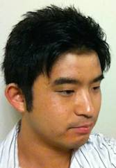
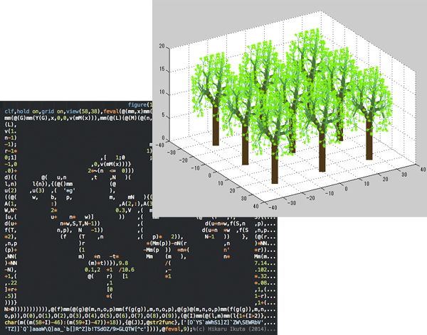

Hikaru Ikuta
Ph.D. student at the Aizawa Yamasaki LabDept. of Information and Communication Engineering, The University of Tokyo
7-3-1 Hongo, Bunkyo-ku, Tokyo 113-8656 JAPAN
ikuta__hal.t.u-tokyo.ac.jp
LinkedIn / GitHub / Twitter
Research Background
Current research interests:- Machine Learning, Image Processing, Image Synthesis
- Control theory
- Systems biology
- Nonlinear dynamical systems and bifurcation theory
Publications
- H. Ikuta, K. Ogaki, and Y. Odagiri, "Blending Texture Features from Multiple Reference Images for Style Transfer," ACM SIGGRAPH Asia Technical Briefs, Article No. 15, 2016. [Project Website]
- H. Ikuta, M. Inoue, and S. Adachi, "Robust Bifurcation Analysis for a Genetic Controller Design Problem for Cell Fate Control," 4th IFAC Conference on Analysis and Control of Chaotic Systems, Vol. 18, No. 48, pp. 53-58, 2015.
- M. Inoue, H. Ikuta, S. Adachi, J. Imura, and K. Aihara, "A Computational Method for Robust Bifurcation Analysis and Its Application to Biomolecular Systems," International Journal of Bifurcation and Chaos, Vol. 25, No. 7, 1540012, 2015.
- H. Ikuta, M. Inoue, J. Imura, and S. Adachi, "Robust Hyperbolicity of Multiple Equilibria and Analysis of the Cellular Reprogramming Process," in Proceedings of the European Control Conference 2015, pp. 2871-2877, 2015.
Education
- Master of Information Science and Technology, The University of Tokyo, Spring 2017
- Bachelor of Engineering, Keio University, Spring 2015
Professional Experience
- Research Intern, Adobe, Remotely from Tokyo, Japan, (with a team in San Jose, CA, U.S.A.) Jun. 2020 - Aug. 2020.
- Research Intern, Microsoft Corporation, Tokyo, Japan, Mar. 2019 - Nov. 2019.
- R&D, Sony Corporation, Tokyo, Japan, Mar. 2017 - Aug. 2018. Machine learning R&D.
- R&D Intern, Dwango Inc. (UEI research), Tokyo, Japan, Oct. 2015 - present. R&D on computer vision and machine learning. Work material published in SIGGRAPH ASIA 2016 Technical Brief.
- Intern, Light Transport Entertainment, Tokyo, Japan, Sep. 2015 - Oct. 2015. Implemented a hair shader based on the Marschner Model
- Intern, appbackr Inc., Palo Alto, CA, U.S.A., Jun. 2013 - Sep. 2013.
- Android and Ruby on Rails Developer Intern, Pankaku Inc., Tokyo, Japan, Oct. 2012 - Jun. 2013.
- Science and Mathematics Tutor, Gakken Educational., Yokohama, Japan, Mar. 2010 - May 2013.
Teaching Experience
- Teaching Assistant: Lab Class (junior-level, 4 students), Sep. 2015 - Dec. 2016.
Led two types of lab classes, of circuit theory (implementation of op-amp circuits) and control theory (stabilizing an inverse pendulum) for junior students. Lectured control theory and circuit theory. - Teaching Assistant: Undergraduate Project Course (junior-level, 4 students), Apr. 2016 - Jul. 2016.
Planned course materials to implement a multiagent system. Lectured control theory, OpenCV in C++, and implementation. - Instructor: Technical Reading and Discussion (senior-level, 4 students), Apr. 2015 - Jun. 2015.
Led the discussion and lectured basic linear algebra and control theory. - Teaching Assistant: Undergraduate Project Course (junior-level, 4 students), Apr. 2015 - Jul. 2015.
Planned course materials to implement a multiagent system. Lectured control theory, circuit theory, programming and implementation.
Projects
Lisp in Life (2021)
Lisp in Life is a Lisp interpreter implemented in Conway's Game of Life.{kind=link}
{kind=link}
{kind=link}
Creating the final pattern involved optimizations in every layer of the project, such as the C compiler, CPU architecture, assembly optimization, optimizing the Lisp interpreter, etc.
The entire pattern can be viewed here: https://woodrush.github.io/lisp-in-life/
GitHub repo: https://github.com/woodrush/lisp-in-life
Blending Texture Features from Multiple Reference Images for Style Transfer
This work extends the Neural Style Transfer method proposed by L. A. Gatys, et al., 2015, so that the color distribution is preserved after style transfer. Further details are available at the Project Website.
Citation:
- H. Ikuta, K. Ogaki, and Y. Odagiri, "Blending Texture Features from Multiple Reference Images for Style Transfer," ACM SIGGRAPH Asia Technical Briefs, Article No. 15, 2016. [Project Website]
Growth - Yet Another Obfuscated MATLAB Code (2014)

This is a project inspired by The International Obfuscated C Code Contest. When the code in the bottom left is run on MATLAB, it produces a figure that looks the same as its code, as shown on the top right of the image above. It was introduced on the MathWorks Blog as the File Exchange Pick of the Week - Thank you for the nice hat and t-shirt! :) The code and the implementation details are available here.
Other Projects:
- "A Neural Algorithm of Artistic Style" in TensorFlow - Implementation of the paper by L. A. Gatys, et al., 2015 (http://arxiv.org/abs/1508.06576) (2015)
- Physically based rendering of 3D fluids - My final assignment for the Realistic Image Synthesis class (2015)
- What You Could Do to Become a Pokémon Master - I received the best presenter award in the 4th-year Presentation Skills class (2014)
- Critical Hit - An in-battle Pokémon damage calculator designed for accuracy and thrill. Source available at GitHub (2013)